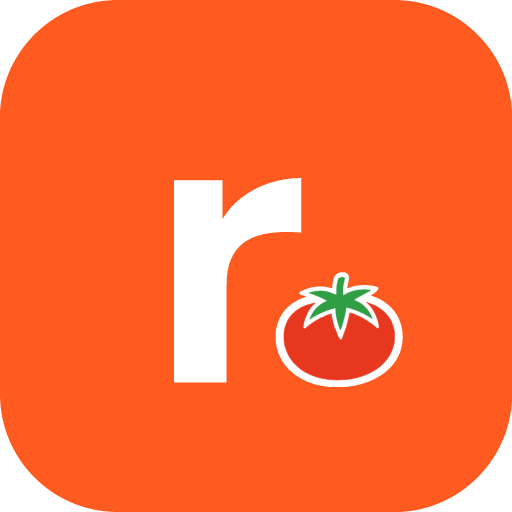
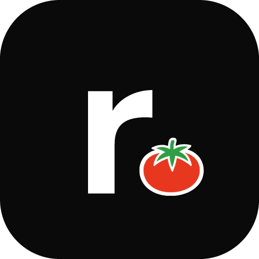
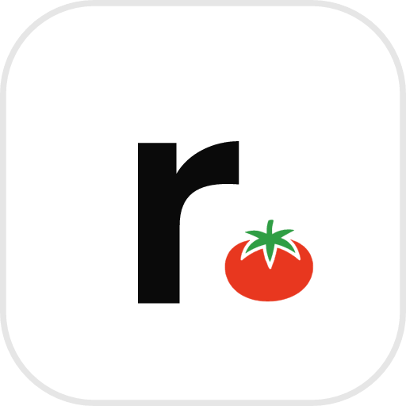
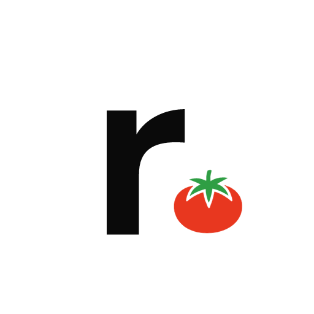
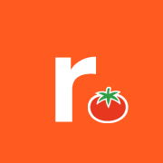

Regra da marca: o tomate só aparece no símbolo, junto do "r". No nome escrito por extenso ("repply food.") vai o ponto da casa, como em "repply crm." e "repply hub.".
Símbolo

repply-food-simbolo · principal
1024 · 512 · 256 · 192 · 128 · 64 · 48 · 32 · 24 · 20 · 16
A versão principal, para quase todo uso.

simbolo-preto · secundária
1024 · 512 · 256 · 128
Sobre fundo laranja ou colorido, onde o principal some.

simbolo-branco · secundária
1024 · 512 · 256 · 128
Quando a plataforma pede ícone claro.

simbolo-solto-preto
Transparente · 1024 · 512 · 256 · 128
Sem o quadrado, sobre fundo claro.

simbolo-solto-branco
Transparente · 1024 · 512 · 256 · 128
Sem o quadrado, sobre fundo escuro.
simbolo-mono-preto
Transparente · 1024 · 512 · 256 · 128
Uma cor só: impressão simples, carimbo, gravação.

simbolo-mono-branco
Transparente · 1024 · 512 · 256 · 128
Uma cor só, sobre fundo escuro.
Tamanhos pequenos
mínimo em 16 e 20 px
O desenho completo aguenta até 24 px. Em 16 e 20 px o tomate vira a bolinha vermelha com contorno.
Logo completo
logo-fundo-claro · padrão
Transparente
logo-fundo-escuro
Transparente
logo-fundo-laranja
Transparente
logo-mono-preto
Transparente
logo-mono-branco
Transparente
Só o nome
texto-fundo-claro
Transparente
texto-fundo-escuro
Transparente
Ícones do app
icon-512 · icon-192
Ícone do app instalado (manifesto do PWA).
icon-maskable-512 · 192
Sem cantos, porque o Android recorta no formato do aparelho (círculo, gota…). O desenho cabe na área segura.

apple-touch-icon (180)
Ícone do iPhone ao "Adicionar à Tela de Início". Sem cantos, porque o iOS arredonda sozinho.
 32
32 16
16favicon.ico · favicon.svg
Aba do navegador. O .ico tem 16, 32 e 48 px dentro.